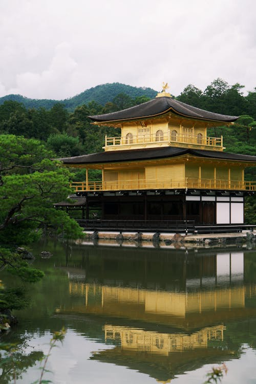

Highlights
Kinkaku-ji (Golden Pavilion)
Admire the beauty of this golden temple set beside a serene pond
Fushimi Inari Shrine
Wander through thousands of vibrant red torii gates leading up the mountain

Gion District
Discover the enchanting world of geishas, tea houses, and traditional streets

Arashiyama Bamboo Grove
Stroll through towering bamboo stalks in this magical forest